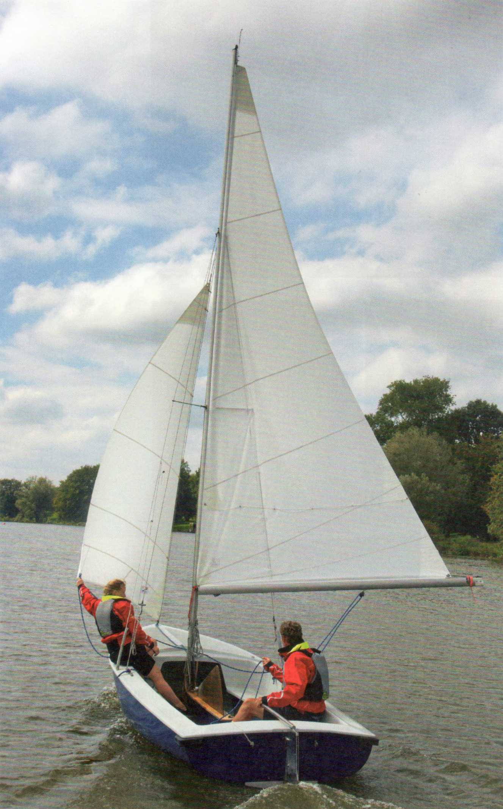

Ветер дует точно с кормы (von achtern). Грот (Großsegel) полностью потравлен (aufgefiert) на правый (Steuerbord) или левый борт (Backbord). Стаксель (Fock) выносят на противоположную сторону — это называют «бабочкой» (Schmetterling) — и либо удерживают руками, либо выставляют на отпорном крюке (Bootshaken) или весле. Этот курс идеален для использования спинакера (Spinnaker). По правилам рулевой (Steuermann) сидит напротив грота, а шкотовый (Vorschoter) страхует гик (Baum) с подветренной стороны (Lee).
На этом курсе при свежем и особенно при порывистом ветре от рулевого требуется неусыпное внимание. Если он не отреагирует немедленно рулём на тенденцию к приведению (Luvtendenz) в порыве, лодка может выйти из-под контроля, и грот с «непреднамеренным поворотом фордевинд» (Patenthalse) перебросится на другой борт. При этом на швертботах (Jollen) возможно опрокидывание (Kenterung), на больших лодках — поломка рангоута (Rigg). Кроме того, на швертботах всегда есть опасность получить гиком по голове.
При усилении ветра лодка начинает раскачиваться (Geigen) — ритмично кренясь на наветренный (Luv) и подветренный борт. При этом тоже легко может произойти непреднамеренный поворот фордевинд.
Менее опытному рулевому при усилении ветра лучше идти несколько более полным курсом, на котором нет постоянной угрозы непреднамеренного поворота. При необходимости можно лавировать (kreuzen) по ветру, идя к цели
двумя или более галсами полных курсов (Raumschots-Schlägen).
И в фордевинд существует небольшой дрейф (Abdrift). Он вызван уже не поперечным давлением ветра на парус, а неравномерным распределением движущих сил справа и слева от мачты (Mast). Поэтому даже на курсе «прямо по ветру» шверт (Schwert) следует оставить немного опущенным — тем более что он противодействует раскачиванию.
► Ни в коем случае на курсе фордевинд не поднимать перо руля (Ruderblatt), потому что оставшейся площади при внезапном порыве может не хватить для своевременной реакции рулём.
На этом курсе крен (Krängung) компенсировать не нужно. Чтобы лучше видеть грот и держать его под контролем, рулевой садится с наветренной стороны, шкотовый — для противовеса впереди у мачты с подветренной стороны, рукой придерживая гик.
► На этом курсе вымпельный ветер (scheinbarer Wind) — истинный минус ходовой (Fahrtwind) — заметно слабее истинного (wahrer Wind). Поэтому существует опасность при усиливающемся ветре с кормы значительно недооценить его силу и слишком долго нести слишком много парусов. Если затем привестись (anluven), можно быть весьма удивлённым, как сильно дует и как лодку кренит.